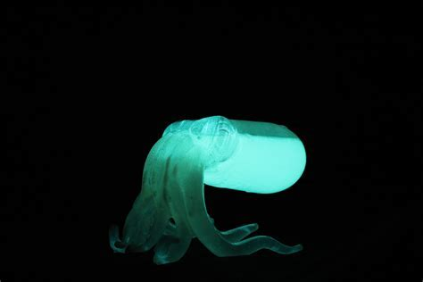
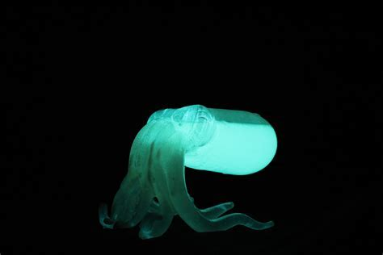

PHROMIA

BENTHOCODON
CTENOPHORE

PLANCTON

CALAMAR
CTENOPHORE

Comme pour tant d’autres phénomènes marins, on s’autoriserait presque à croire que la biofluorescence est d’origine extraterrestre. Plus de 80 % des océans sont inexplorés et, selon la NASA, nous en savons plus sur la surface de la Lune que sur nos propres fonds marins. Certains phénomènes comme celui-ci commencent à peine à être compris.
D’après David Gruber, biologiste marin et explorateur National Geographic, l’intérêt porté par les scientifiques à ce phénomène a grandi ces dix dernières années. Il est à l’origine de plusieurs avancées sur le sujet, et plus particulièrement d’une étude parue en 2019 qui montrait comment ces animaux produisent ces effets lumineux grâce à des molécules dont la science ignorait l’existence.
En 2014, il a prouvé dans une de ses études que la biofluorescence est monnaie courante chez plus de 200 espèces de poissons. Ses recherches ont également montré que certains requins ont la capacité de briller dans le noir ; une avancée révolutionnaire que National Geographic a incluse dans son classement des vingt plus grandes découvertes des années 2010.
PHROMIA
BENTHOCODON
CTENOPHORE
PLANCTON
CALAMAR
CTENOPHORE
Un triptérygion avec des zones ciblées de biofluorescence rouge lorsqu'elles sont stimulées par la lumière bleue de l'océan.
Dans le cas de la biofluorescence, les longueurs d’onde bleues du spectre lumineux sont réfléchies par la peau des animaux sous forme de lumière d’une couleur différente, généralement en vives teintes de vert, d’orange et de rouge.
L’océan ajoute une couche de complexité au phénomène. Nous, les humains, voyons la lumière en nuances de rouge, de vert et de bleu. Mais sous l’eau, notre vision faiblit. À mesure que l’on s’enfonce dans les profondeurs, certaines longueurs d’onde du spectre visible de la lumière sont éliminées. À environ six mètres, le rouge n’existe plus. À trente mètres, tout n’est virtuellement que bleu et vert.
Enfin, à l’étage bathypélagique (ou zone de minuit), à environ un kilomètre sous la surface, la lumière cesse. De nombreux animaux des fonds marins sont dotés de filtres oculaires jaunes leur permettant de détecter la bioluminescence d’autres poissons.

Cette limace de mer (Liparis gibbus) est la première espèce de l’Arctique chez laquelle on a découvert le phénomène de biofluorescence. Elle est à la fois verte et rouge, un rare cas de fluorescence multiple chez un animal. Pour dissiper petit à petit ces énigmes et découvrir le rôle qu’y joue la lumière, David Gruber et son équipe mettent au point des caméras imitant les yeux d’animaux marins biofluorescents afin d’observer le monde de leur point de vue. Lorsqu’ils ont découvert la biofluorescence chez les roussettes, ils ont fabriqué une caméra équipée de filtres spéciaux pour simuler la façon dont la lumière percute leurs yeux. Deux choses leur ont sauté aux yeux : les roussettes voient la biofluorescence verte qu’elles émettent elles-mêmes et elles peuvent accroître le contraste de leurs motifs fluorescents.
Ces dix dernières années, les chercheurs ont découvert plus de 200 espèces biofluorescentes.
Cependant, il existe si peu d’études pour expliquer comment et pourquoi ces animaux marins brillent, que les chercheurs ont plus de questions que de réponses. Selon les hypothèses, ce phénomène permettrait une communication inter-espèces, de trouver des partenaires, de se cacher pour échapper aux prédateurs ou encore de chasser des proies. Leurs recherches n’intéressent pas seulement le domaine de la science; elles ouvrent la voie à de meilleures pratiques en matière de conservation des espèces. Plus nous en savons sur la vie marine, mieux nous pourrons la protéger, cela est évident